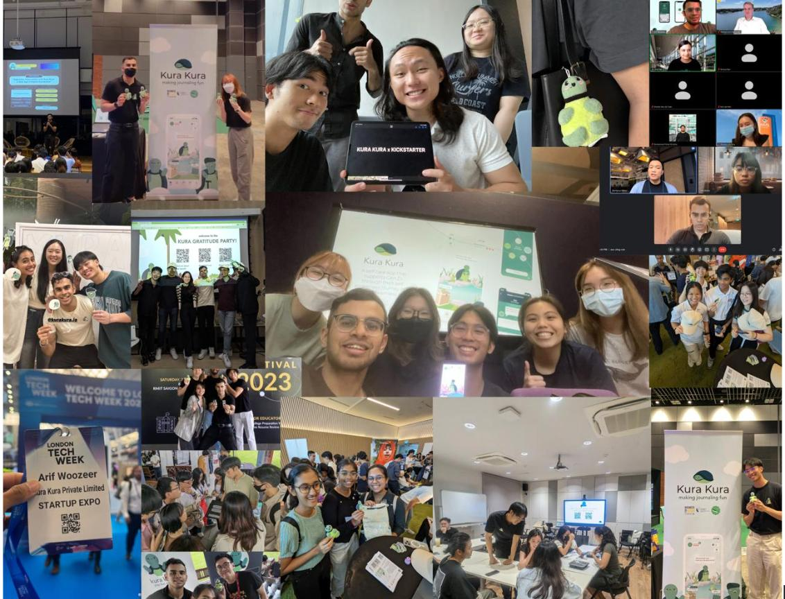
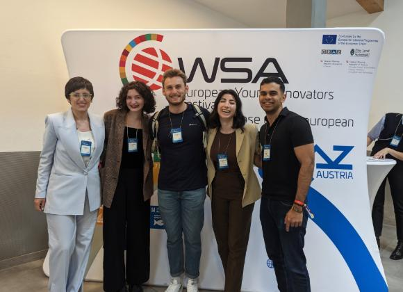
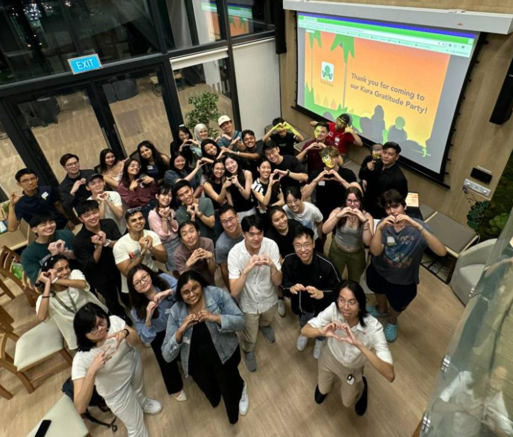

Wicked Problems
In 1973, design theorists Horst Rittel and Melvin Webber introduced the term “wicked problems” to describe complex challenges that resist straightforward solutions because their requirements are incomplete, contradictory, or constantly changing. [1] [2]
For most of my university life, nearly every encounter with a friend, peer, or acquaintance would somehow start with "how's Kura?" The question became a kind of reflex greeting … a check-in that also manifested itself in a form of accountability.
Kura wound down in summer 2025. I’ve been putting off writing this ever since. Where do I start? Where do I end? Did Kura fail? Did I fail?

Looking through the photos Arin and I put together, I felt a strange mix of wistfulness, gratitude and, oddly enough, relief. Maybe failure isn’t quite the right framing after all. (Or maybe that’s residual delusion. A separate topic for another day…)
KURA KURA PRIVATE LIMITED started after National Service. I essentially got a first-hand view of what could be described as the last-mile "delivery gap" in youth mental health. Veric, Roydon and I conceived of it as a response to that gap, specifically in the context of COVID-19. What began as a rough idea became a social messaging board, then a dashboard, then a fully fledged app. Eventually it was Arin and I taking it to the finish line (or as far as we could take it).
Over five years: 2,500 users across Singapore, Indonesia, Malaysia. Over S$70,000 raised. Nearly 20 people through the team at various points, some unpaid in the early days. Trips to Ho Chi Minh City, Graz, conferences I would have never imagined myself participating in as a university student. A lot of pitching. A lot of grant reports. A lot of 11pm Slack messages.
I can say pretty emphatically that I never set out to be an “entrepreneur”. I wanted to make the act and process of journaling easier. As it turns out, that’s a surprisingly difficult mission to know when to stop pursuing.
On measurement
So did it actually help anyone?
I kept coming back to John Doerr’s Measure What Matters, particularly the idea that a key result should be measurable enough that, at the end of a quarter, you can tell whether you’ve achieved it.
The problem is that mental health outcomes are hard to measure, and the academic literature on digital health tools is full of studies that use engagement (session frequency, retention, streaks) as proxies for wellbeing. In digital mental health, pre- and post-use surveys are a common way of assessing whether a tool works. But that opens another can of worms. What framework are you using? How big is the sample? And does asking someone to fill out a 30-question survey before and after using an app really tell you whether the app helped?
Martin Seligman's PERMA framework offers one lens: wellbeing involves positive emotion, engagement, relationships, meaning, accomplishment. A journaling app might touch one or two of these (on a good day). If someone journals every day but their relationships are deteriorating, have you helped them? Conversely, if someone has a poor mood but is able to describe their emotions and the associated contributing factors, can that be deduced as a sign that the app has assisted in translating their feelings into words?
Goodhart’s Law kept coming to mind: when a measure becomes a target, it stops being a good measure.
For us, daily active users became the goal, which meant streaks, gamification, push notifications, the whole engagement playbook. (very Hooked by Nir Eyal energy..)
All of it optimised for retention rather than change. We weren’t necessarily unique in this, but applying that playbook to a mental health app always felt somewhat disingenuous.
This chasm felt impossible to reconcile. Was it fair to the user to design a UX flow that would leave them "hooked"? We were convinced that working towards a positive utility meant that it was fair game but was there merit to trying to optimize for retention when retention may not correlate with better overall mental health outcomes? Even a randomised controlled trial might tell you that an intervention helped without telling you which part of the app actually made the difference.
A 2024 study of 48 people learning Spanish with Duolingo found improvements across all the measures tested. Weekly time on the app did not significantly predict learning gains, while session completion and accuracy did. The authors note that the minimum-usage requirement may have limited what they could detect about time spent. For me, that raises a narrower question: what does time on an app actually tell us about whether it’s helping?
The same problem came up with our advisors, grant facilitators and partners. When building a dashboard for secondary school students, there was a lot of discourse (rightly so) on what metric would be ideal for teachers to track. Persistent "low" moods? Length of journal entries? Potential for self harm? The permutations felt endless in trying to map it out. I'm cognizant that there probably isn't one right answer here but I do wonder how many people in the mental health tech scene are convinced that one exists.
On first principles
I remember being asked at a conference in Graz: why an app?
I gave the standard tech blue pilled answer: scalability!! At the time to me the question almost didn't make sense. My internal dialogue was obstinate, "bro what is this guy on? Can't they see that in order to deliver impact you need a medium that can propagate across the masses??" I was convinced that an app was THE panacea that could be that in between for users caught up in a support system that was heavily stigmatized. There was merit to the argument but we always came back to the product. The roadmap. Move fast break things. Lean startup cycle. What the next feature would look like. We never really (or rarely did) stop to ask whether tech was the right intervention at all.

I later came across Evgeny Morozov’s term for this: technological solutionism. The tendency to treat social problems as if they’re “waiting” for a better piece of technology. There are some contemporary examples of this.. (ahem)
But that framing was pretty close to what we’d been doing.
But alas, I do want to give myself, or at least the team, some grace. Our grant disbursements were tied to specific tech outcomes. I was pursuing my undergrad in a computing school. This was also the post-COVID tech rush, when zeitgeist revolved around case studies of Duolingo, Calm and Headspace and wondering whether the same success could translate to mental health.
Vibe coding has made it easier than ever to build a fully fledged app. But I’m increasingly interested in the question we probably didn’t spend nearly enough time on at Kura: whether an app was the right intervention in the first place.
A journaling app sits very far downstream of the circumstances that shape someone’s mental health. I don’t think we confronted that enough when we were building Kura.
On what running a company actually means
Once you are responsible for payroll, people's livelihoods are no longer an abstract part of running a business. You know that the salary you are paying someone matters to their life outside work.
One former team member went on to another company, and I’d like to think their time at Kura helped them in some small way. Nearly 20 people worked with us over the five years and it was quite a responsibility for a bunch of us who were still figuring things out ourselves.
It also changed how I think about the private sector. I came into Kura with a social enterprise lens and some fairly strong reservations about what companies are for, particularly when it comes to "public interest" areas like mental health technology, and how commercial incentives can sit uneasily alongside social needs.
I still hold many of those concerns (would like to ventilate these at some point). But having actually run a company, I find it harder to dismiss the private sector as simply “profit bad”.
After Kura
I don’t think I’m done with the questions Kura raised. I’m still interested in what responsible AI in mental health support should look like, though probably not as a product guy building something. I’m more interested in what responsibility the people building these systems carry, and where policy should draw the line.
That's part of what pulled me towards research. I'm now working independently on how AI systems behave in therapeutic conversations: the assumptions they make, and what happens when those assumptions are challenged.
My experience with the REACH Alliance has also kept me thinking about impact from a different angle. I keep coming back to the same question: when we say an intervention works, what exactly are we claiming, and what evidence do we have for it?
Closing
So, did Kura fail? I still find that difficult to answer.
We built an app to address a difficult problem, with limited resources and changing circumstances. Most of the team was still in university, and we were figuring a lot of it out as we went.
What I can say is that we took it as far as we could, and eventually decided to stop.

Cheers :)